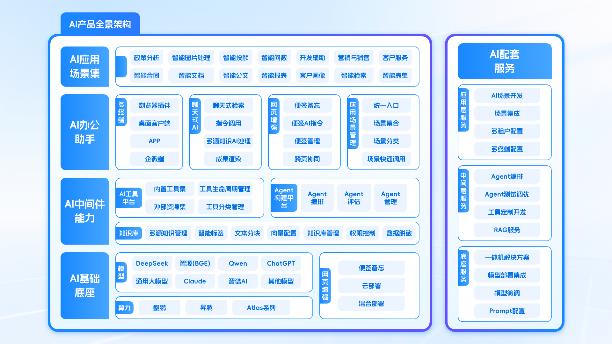

聚势华为生态，赋能千行百业
当下人工智能产业浪潮奔涌，AI作为数字经济核心引擎，正全面赋能政企数字化转型。3月30日，以"商业AI·数智新程"为主题的华为北京政企ISV×SI生态共建活动在北京举办。北京神州新桥科技有限公司作为华为的重要伙伴受邀参会，与众多行业同仁共同探讨AI技术落地路径，持续深化开放共赢、协同共进的数智生态建设。
华为中国政企解决方案规划与集成验证部部长朱丹、华为北京政企Marketing与解决方案销售部部长于督分别致辞，阐述了华为在"行业+AI"发展中的支持举措——依托昇腾算力与全栈AI解决方案，通过六大区域OpenLab及云上平台，为伙伴提供从技术支撑到市场拓展的系统性助力。华为北京政企昇腾产业技术总监郑杰分享了行业AI发展风向，指出昇腾在安全可信、高性能、本地化部署方面具备核心优势，可满足金融、政务、科研等重点领域的智能化需求。
在伙伴分享环节，北京神州新桥科技有限公司AI应用创新部总经理迟宝佳向与会嘉宾介绍了公司的核心能力与实践方向。
公司专注于AI大模型与行业需求的链接、赋能与集成，依托AI技术服务与AI应用产品两大中心，构建安全灵活的AI服务体系。在智能办公、数字营销、知识问答等场景，神州新桥已实现创新突破，成功将AI能力转化为可落地的解决方案。

活动期间，来自政务、金融、教育等行业的与会客户对神州新桥的AI应用方案表现出浓厚兴趣，就长文档处理与知识检索的实际效果、AI应用与现有IT架构的融合路径，以及多终端覆盖在跨部门协同场景下的支撑能力，与神州新桥团队展开详细交流。

神州新桥深耕企业信息化与系统集成领域二十余年，近年来持续发力AI应用落地实践，已形成成熟的AI产品体系与交付能力。AI产品体系依托"AI技术服务"与"AI应用产品"两大中心构建，覆盖长文档处理、智能问答、会议助手、智能审核等100+企业高频办公场景。产品支持浏览器插件、网页、桌面端、移动端APP、企业微信、飞书等多终端形态，与现有业务系统零侵入融合，不改造企业原有IT架构；底层全面兼容昇腾系列服务器与华为云EI平台，支持本地、私有云、混合云、公有云等灵活部署。另外，公司还在三个方向形成代表性产品能力：AI数字人员工承担标准化、重复性工作流程，助力员工聚焦高价值工作；企业级知识库覆盖从数据采集、处理、向量索引到召回统计的完整链路，实现多文档语义检索与智能关联；镜像企业通过构建与组织架构和业务流程深度对齐的AI系统，推动内部运营的智能化升级。

北京神州新桥科技有限公司将继续聚焦智能办公、数字营销、知识问答等优势领域，依托华为昇腾算力底座，持续推进AI产品的行业落地与规模化应用，携手华为及广大生态伙伴共赢商业AI时代。